More staying power
High-Protein Meals for One
These meals put a protein-forward ingredient at the center: eggs, fish, beans, tofu, cottage cheese, yogurt, shrimp, or pork. They are still small-batch recipes for one, not a spreadsheet of macros. Check package labels for exact nutrition, then use the textures, sauces, and sharp finishes here to make a satisfying plate.
23 recipes in this collection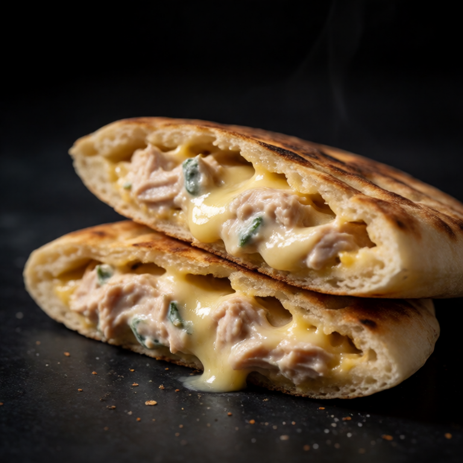
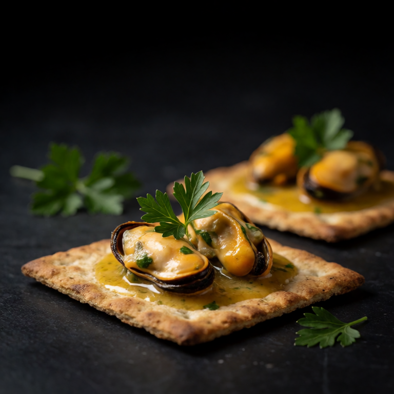
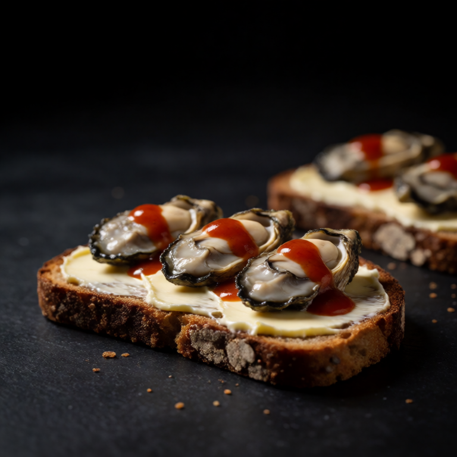
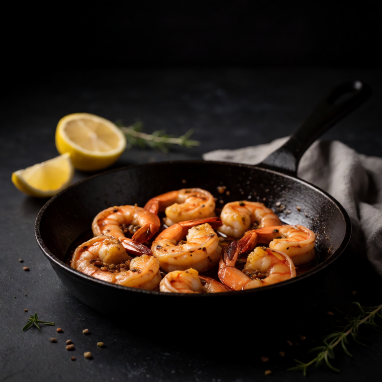
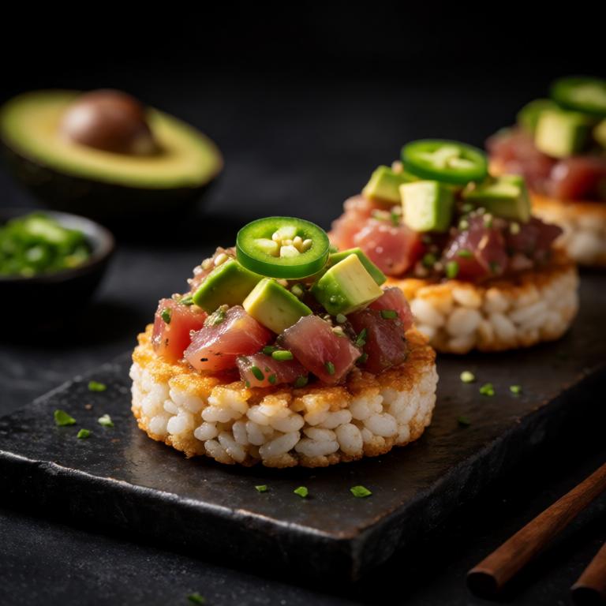
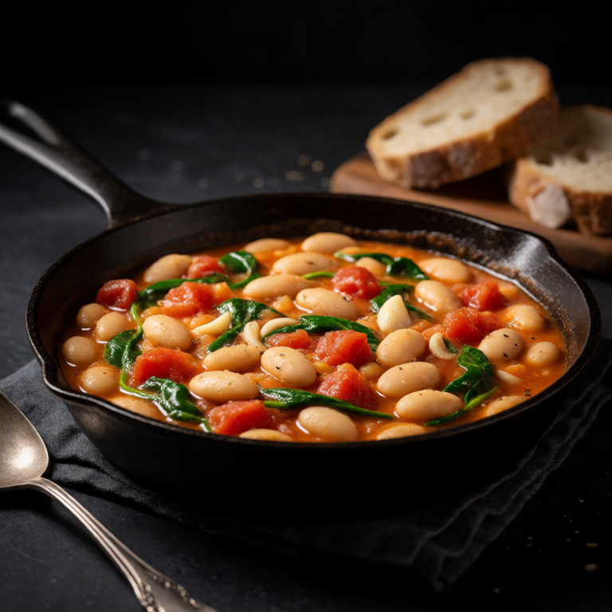
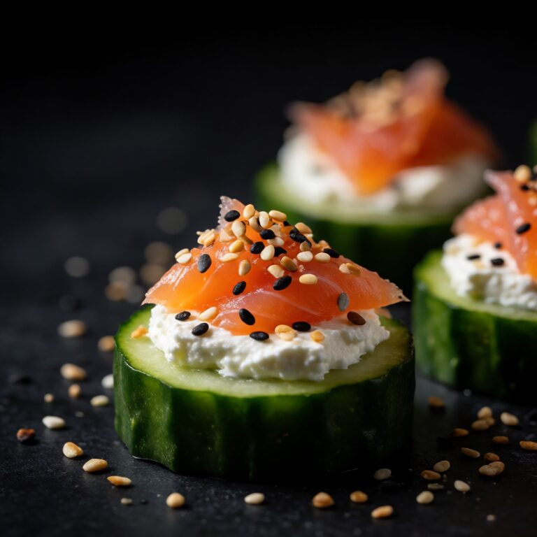
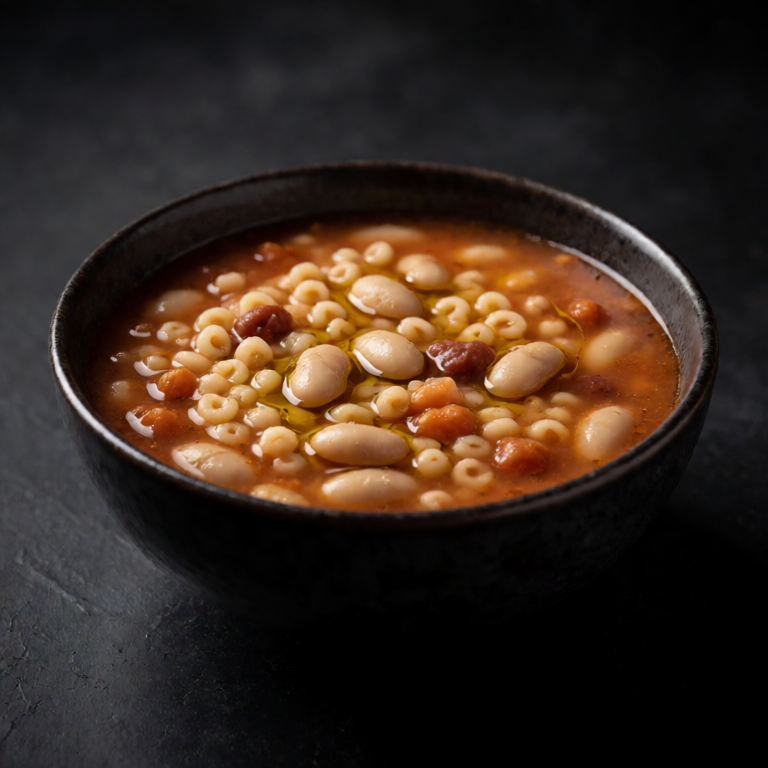


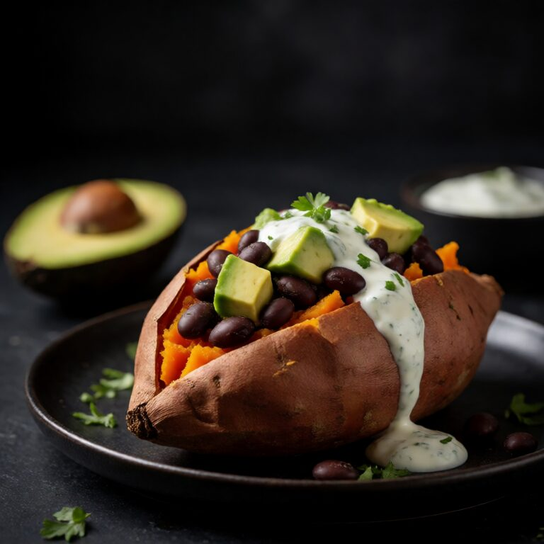
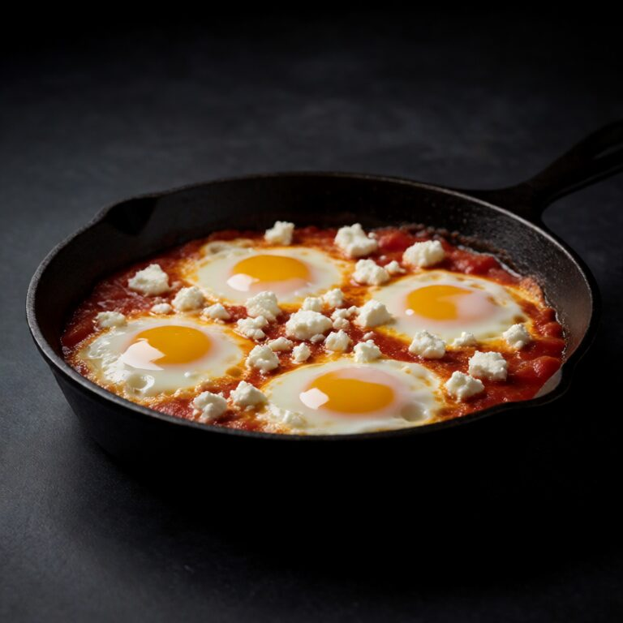
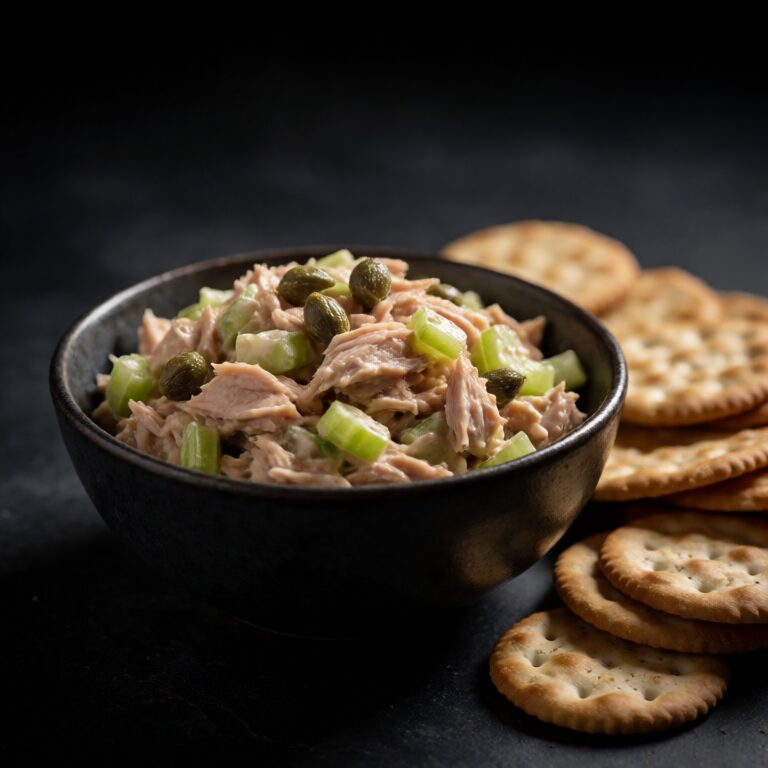


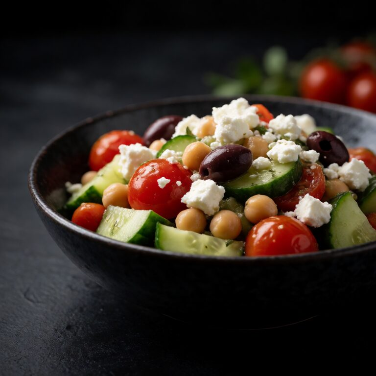
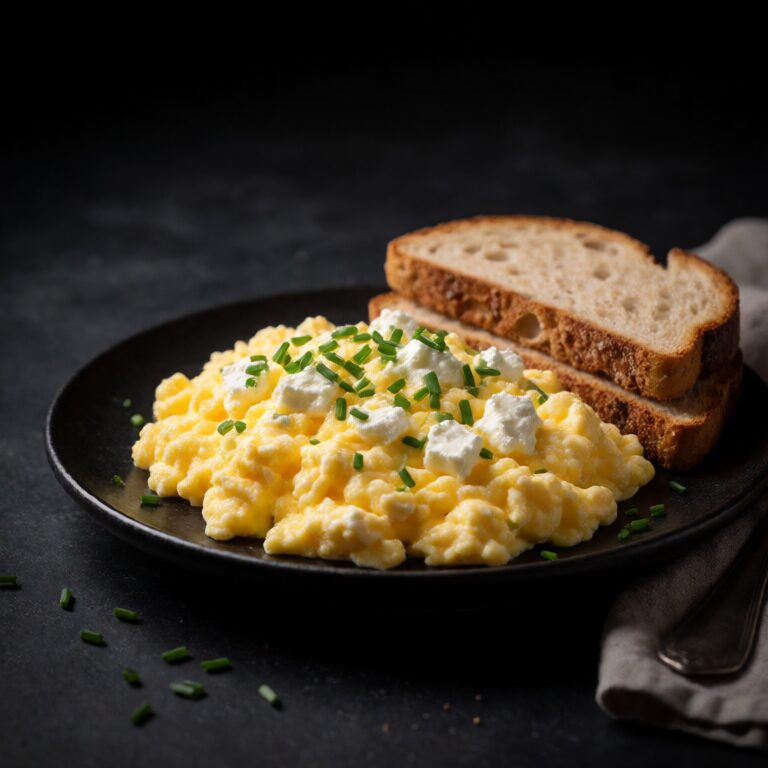
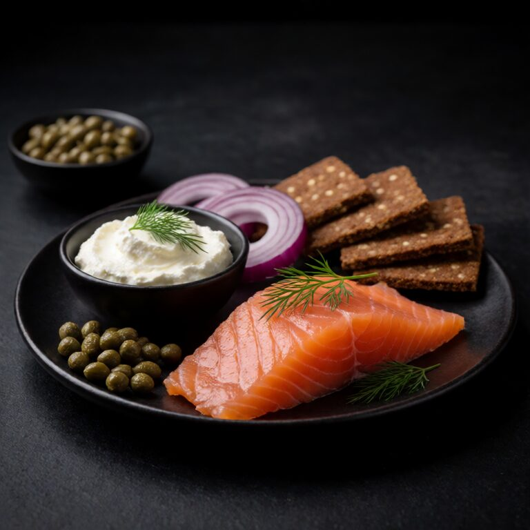
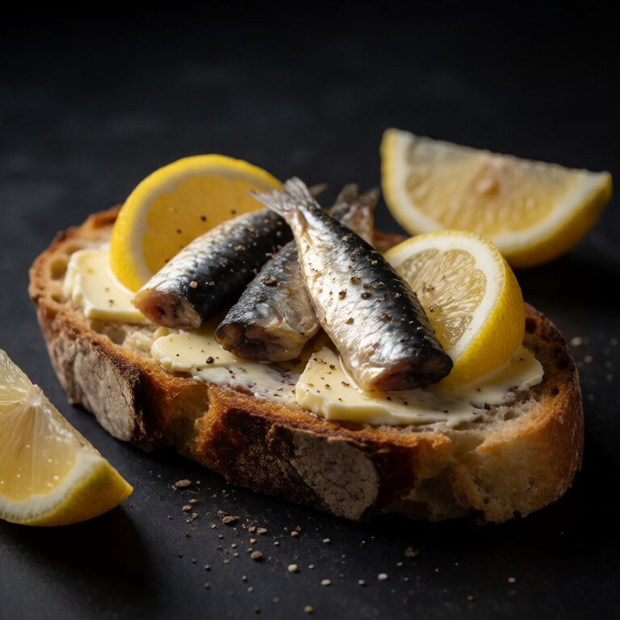

A better starting point
Build a protein-forward dinner
- Choose one clear anchor such as eggs, fish, beans, tofu, cottage cheese, yogurt, shrimp, or pork.
- Pair the anchor with a useful base: toast, rice, potatoes, noodles, greens, or crackers make a small portion eat like dinner.
- Use acid and texture to keep the plate lively. Lemon, pickles, herbs, chilli, toasted seeds, and crisp vegetables do the work.
- Nutrition varies by brand and portion. Use the recipe as written for one serving and check labels when exact protein numbers matter.
High-protein meals for one questions
What counts as high protein here?
The collection prioritizes recipes built around recognizable protein sources such as eggs, fish, beans, tofu, cottage cheese, yogurt, shrimp, and pork. It does not assign exact grams because brands and serving sizes vary.
Can I make these meals more filling?
Add the suggested base rather than simply increasing the protein: toast, rice, potatoes, noodles, greens, or crackers turn the central ingredient into a complete single-serving meal.
Are these recipes meal-prep friendly?
Some are, but many are best fresh. Follow each recipe's storage note, especially for eggs, fish, crisp toppings, and dressed vegetables.